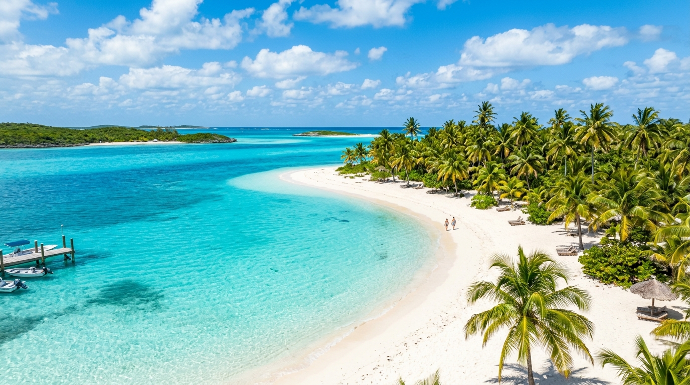
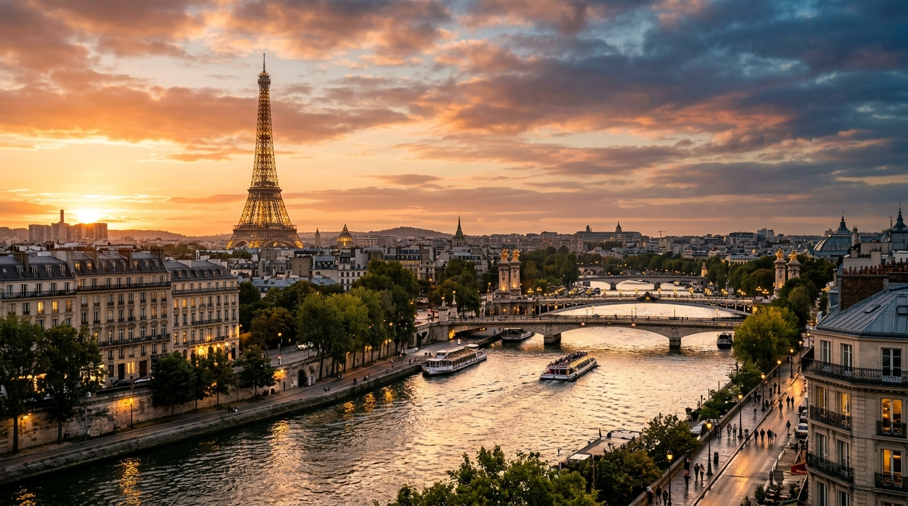
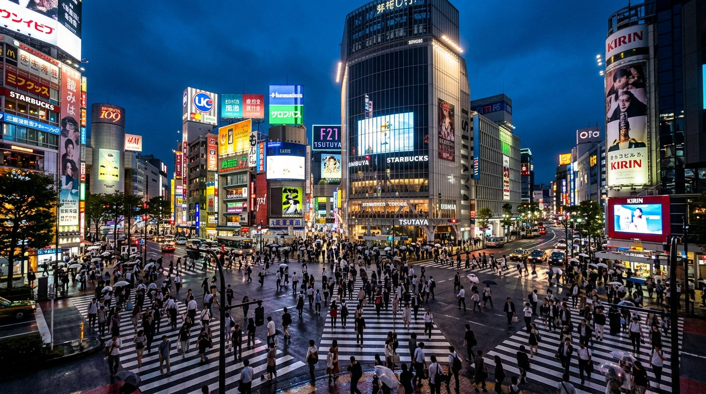
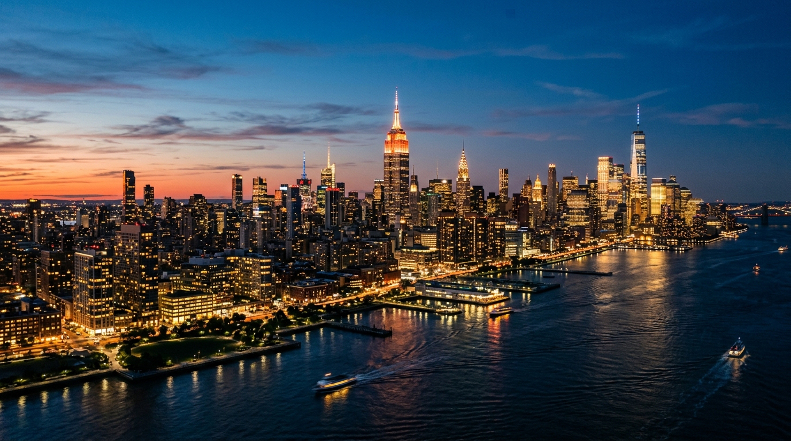

My Travel Bucket List
The top four global destinations I am set on exploring: the tropical turquoise waters of The Bahamas, the romantic art and architecture of Paris, the high-tech neon streets of Tokyo, and the electric energy of New York City.
The Four Dream Expeditions
Detailed bucket-list itineraries and aspirations for my top dream travel spots across the globe:

🇧🇸 The Bahamas Island EscapePristine Waters & Island Life
Swimming in crystal-clear turquoise waters, exploring the world-famous Exuma Cays sandbars, snorkeling vibrant coral reefs, and experiencing the relaxed warmth of Bahamian culture.
- Swim and boat through the pristine Exuma sandbars
- Snorkel healthy coral reefs and swim with tropical marine life
- Experience local Bahamian cuisine and Nassau's historic markets
- Unwind on secluded white and pink sand beaches

🇫🇷 Paris, France Cultural MarvelThe Eiffel Tower & Timeless Art
Standing beneath the illuminated Eiffel Tower at night, cruising down the scenic River Seine, walking the halls of the Louvre Museum, and soaking in the timeless café culture of France.
- Take the elevator to the top of the Eiffel Tower at golden hour
- Explore centuries of masterworks at the Louvre Museum
- Take an evening boat cruise along the illuminated Seine River
- Wander through Montmartre and taste authentic Parisian pastries

🇯🇵 Tokyo, Japan Future MetropolisNeon Lights, Tech & Ancient Traditions
Immersing myself in the electric energy of Shibuya Crossing, discovering cutting-edge electronics in Akihabara, visiting peaceful historic shrines, and riding the 200 mph Shinkansen bullet train.
- Cross the world's busiest pedestrian intersection at Shibuya Scramble
- Explore futuristic tech, gaming, and robotics stores in Akihabara
- Walk beneath the giant red lantern of historic Senso-ji Temple
- Ride the high-speed Shinkansen bullet train and taste authentic ramen

🇺🇸 New York City Urban LegendThe Concrete Jungle & Broadway Lights
Feeling the fast-paced pulse of Times Square, walking across the iconic Brooklyn Bridge, taking in panoramic views from observation decks, and experiencing the world's entertainment capital.
- Walk across the Brooklyn Bridge for panoramic Manhattan views
- Experience the dazzling lights and billboards of Times Square
- Explore Central Park and catch an event at Madison Square Garden
- Look over the skyline from the Top of the Rock or Empire State
Destination Comparison Matrix
How each of these four dream destinations fits into my future travel ambitions:
The Bahamas
- Trip Type: Island Relaxation & Marine Adventure
- Primary Vibe: Tropical, Ocean Breeze, Scenic
- Best Season: Mid-December to April
- Top Activity: Exuma boat charter & reef diving
Paris, France
- Trip Type: Cultural Exploration & Architecture
- Primary Vibe: Historic, Romantic, Masterpieces
- Best Season: Spring (April–May) or Autumn
- Top Activity: Eiffel Tower summit & Louvre tour
Tokyo, Japan
- Trip Type: High-Tech Metropolis & Heritage
- Primary Vibe: Energetic, Futuristic, Culinary
- Best Season: Cherry Blossom (March–April) or Fall
- Top Activity: Shibuya Crossing & Akihabara tech
New York City
- Trip Type: Iconic American Big City Life
- Primary Vibe: Fast-Paced, Skyline Views, Broadway
- Best Season: Autumn (September–November)
- Top Activity: Brooklyn Bridge & Madison Square Garden
Collect Moments, Expand Your Perspective
"Traveling teaches you things no classroom can replicate." Experiencing diverse cultures, tasting new cuisines, and witnessing famous landmarks in person broadens understanding, builds confidence, and creates stories that last a lifetime.